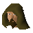

Koftik

| Config name | caveguide2 |
| NPC id | 973 |
| Combat level | hidden |
| Options | Talk-to |
| Wander range | 5 tiles from spawn |
| Defined in | scripts/quests/quest_upass/configs/upass.npc |
Koftik
The cave guide.
Show all 1 spawn on the world map → Open in knowledge graph →
Locations
| Area | Coordinates | Level | Count | Map |
|---|---|---|---|---|
| Underground Pass (underground) | 2449, 9716 | 0 | 1 | view |
Dialogue
PlayerThanks for getting me out Koftik.
KoftikAlways a pleasure squire.
KoftikI found this cloth amongst the charred remains of some arrows, perhaps you need it?
PlayerKoftik, how can we cross the bridge?
KoftikI'm not sure, seems as if others were here before us though...
KoftikI found this cloth amongst the charred remains of some arrows.
PlayerCharred arrows? They must have been trying to burn something. Or someone!
PlayerInteresting... we better keep our eyes open.
KoftikI have also found the remains of a book...
PlayerNot to worry, probably just litter.
KoftikWell.. maybe?
PlayerWhat does it say?
KoftikIt seems to be written by the adventurer Randas. It reads...
PlayerHi Koftik.
KoftikHi - I found this cloth amongst the charred remains of some arrows, perhaps you need it?
Quests
Referenced in scripts
scripts/quests/quest_upass/scripts/koftik.rs2